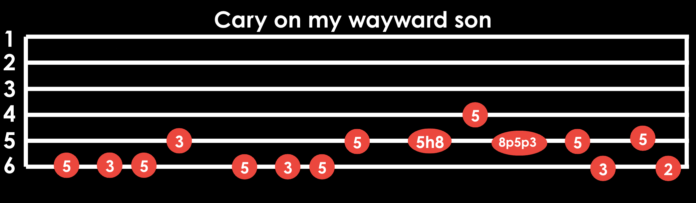

Hammer-ons and Pull-offs
Hammer-ons and pull-offs are techniques used to play notes smoothly without picking each one.
to perform a hammer-on, pick the first note and then quickly press down on a higher fret with another finger to sound the second note.
To perform a pull-off, pick the first note and then quickly lift your finger off the fretboard to sound a lower note.
this is a good song to practice hammer-ons and pull-offs
Slides
Slides involve moving your finger up or down the fretboard to transition between notes.
To perform a slide, pick the first note and then slide your finger to the next fret while maintaining pressure on the string.
This technique adds a smooth, gliding sound to your playing.
Bends
Bending a string changes the pitch of the note, adding expression to your playing.
To perform a bend, pick the note and then push or pull the string up or down with your finger to raise the pitch.
Practice bending to different pitches to develop control and accuracy.